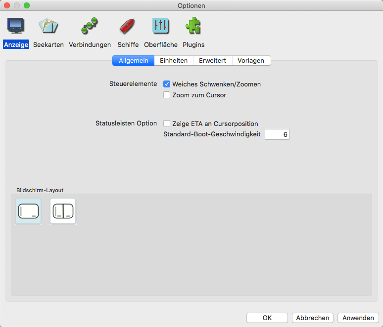

Schiff autom. zentriert und Anzeige Orientierung
- Klick auf das Schiff autom. zentriert Symbol zentriert die Karte direkt
an dem aktuellen GPS-Ort des Bootes und zeigt dort das Schiff-Symbol auf der Karte an. Aktiviert ist das Schaltsymbol etwas größer und grauer. Bei vorhandenem
GPS Signal ist das Schiff-Symbol auf der Karte rot
 sonst grau
sonst grau  . Ändert
sich der Kartenmaßstab auf kleiner als 1:300.000, dann ändert sich das Schiff-Symbol mit GPS Signal zu oder sonst zu
. Ändert
sich der Kartenmaßstab auf kleiner als 1:300.000, dann ändert sich das Schiff-Symbol mit GPS Signal zu oder sonst zu
 .
. - Das Standard "Eigenes Schiff"-Symbol kann ersetzt werden, in dem man eine eigene Datei "ownship.xpm" in das Verzeichnis "UserIcons" kopiert. Mehr darüber unter Routen und Markierungen.
- Das ist in zwei verschiedenen Situationen nützlich:
- Wenn Sie die Karte von Ihrem aktuellen Ort verschoben haben und schnell zum Schiffsort zurück kommen möchten.
- Unterwegs wird der Karten-Bereich um das Boot angezeigt mit dem Boot in der Mitte der Karte.
- Anmerkung: Das Verschieben der Karte unterbricht diesen Modus. Erneuter Klick auf schaltet den Schiff autom. zentriert Modus wieder ein.
- Die Anzeige kann auf zwei Arten orientiert werden, normal ist Norden oben, Kurs oben ist eine Alternative. Ist Kurs oben aktiviert,
dann verwendet OpenCPN COG (Course over Ground, Kurs über Grund). Mit Einstellungen --> Grundeinstellungen --> Karte nach Kurs ausrichten kann dieser
Modus aktiviert werden, schneller jedoch mit dem Rechts-Klick Menü. Empfohlen wird dieser Modus z.B. bei Fahrt durch Flüsse oder Kanäle.
Im Bild unten ist "Kurs oben" aktiv. Kurs über Grund (COG) ist 41 Grad. Beachten Sie den horizontal angezeigten Text auf der Vektor Karte. Das geht nur im OpenGL Modus. Der rote Pfeil oben links zeigt immer nach Norden. - Ist die Option "schiefe/gedrehte Raster Karten genordet anzeigen" in den Einstellungen nicht aktiviert, dann ändert sich der Text im Rechts-Klick Kontextmenü "Karte nach Kurs ausrichten" bzw. "Karte nach Norden ausrichten" bei gedrehten Karten.
- Ist im NMEA Datenstrom ein elektronischer Kompaß verfügbar, wird das "Eigene Schiff"-Symbol nach seinem Kurs orientiert. Der Unterschied kann auf
der Karte gesehen werden, wenn es z.B. eine Querströmung gibt. Das Boot unten hat den Kurs WNW, ist aber auf SW gesetzt. Es ist auch ein AIS CPA (Closest
Point of Approach) zu sehen.
- Dieses Symbol ganz rechts in der Werkzeugleiste zeigt an, daß die Anzeige im Nord oben Modus (blau) ist.
 Ist das Symbol rot, ist der Kurs oben Modus aktiv. Diese Einstellung kann auch
mit den Einstellungen --> Grundeinstellungen --> Einstellungen zur Kartendarstellung --> Karte nach Kurs ausrichten Modus kontrolliert werden.
Ist das Symbol rot, ist der Kurs oben Modus aktiv. Diese Einstellung kann auch
mit den Einstellungen --> Grundeinstellungen --> Einstellungen zur Kartendarstellung --> Karte nach Kurs ausrichten Modus kontrolliert werden.- Sowohl der rote als auch der blaue Pfeil zeigen immer nach Norden.
- Voraus Schau! Um mehr von der Karte vor dem Boot zu sehen, aktivieren Sie Einstellungen --> Grundeinstellungen --> Einstellungen zur Kartendarstellung --> Kurs-Voraus Modus. Ihr Boot ist dann nicht mehr in der Mitte des Bildschirms, sondern weg von der Mitte in der Gegenrichtung zum aktuellen GPS Kurs (COG).
- Nicht immer Voraus Schau! Ist man vor Anker, erzeugt das Schwoien wechselnde Kurse
und niedrige Geschwindigkeiten. Ist in dieser Situation Voraus Schau an, wird die Karte permanent neu
gezeichnet mit dem Boot in allen möglichen Richtungen bei diesen wechselnden Kursen. Um das zu
vermeiden, arbeitet OpenCPN so:
* Ist die Boots-Geschwindigkeit kleiner als 1 kn, ist Voraus Schau! abgeschaltet.
* Ist die Boots-Geschwindigkeit größer als 3 kn, ist Voraus Schau! aktiviert.
* Zwischen 1 und 3 kn ist die Voraus Schau! "Distanz" angepaßt.
* Gibt es weiterhin Probleme bei mehr als 3 kn, kann mit den Einstellungen, Lasche GPS bei "Filter NMEA Kurs u. Geschw. Daten" ein Dämpfungswert eingegeben werden. - Zeige verdrehte Raster-Karte genordet. Verdrehte Karten werden normalerweise schief angezeigt. Mit dieser Check-Box werden solche Karten genordet. In beiden Fällen mit aktiviertem Kurs-Oben geht es wie erwartet, der Unterschied ist, wenn Kurs-Oben nicht an ist.
